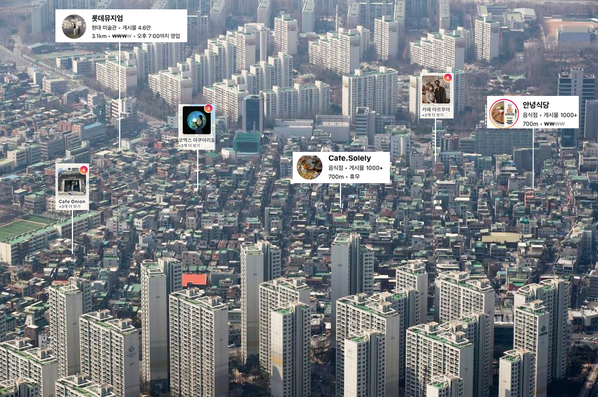
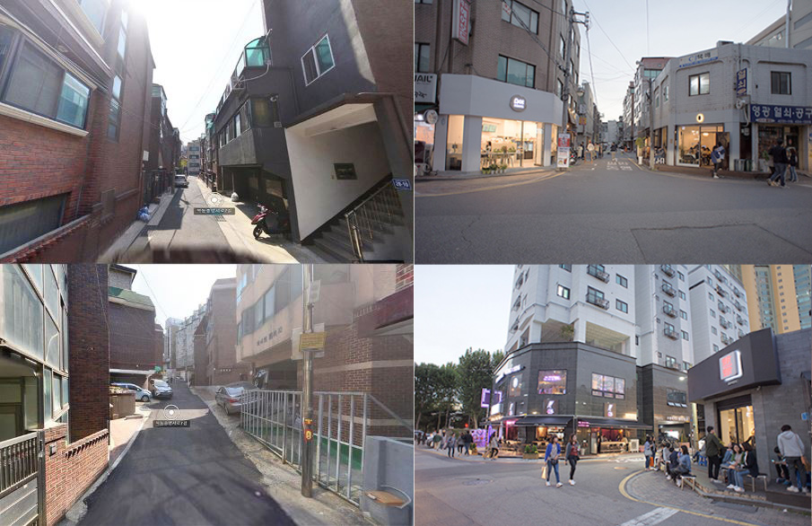
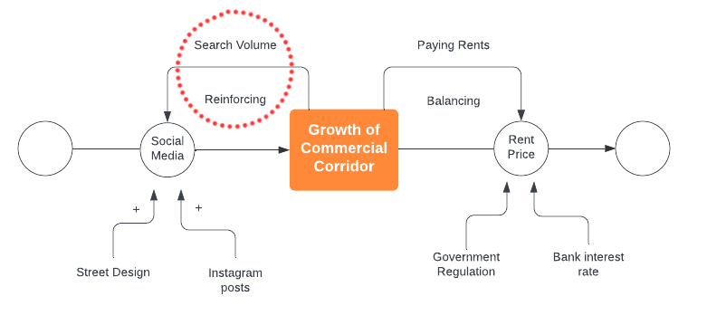

The impact of viral social media trends on the urban alleyways
Much of Seoul has grown organically without centralized planning, resulting in a flexible urban fabric dominated by low rise, high-density residential blocks called villas. When these villas alleyways align with urban attractions, their adjacent alleys often transform into trendy hubs for young entrepreneurs, gaining popularity on Instagram. However, the viral trends in social media made its popularity very unpredictable.
Gyeonglidan-gil, the rise and fall of the commercial alleyways
Before and after the corridor gets popular in social media.
Social media, particularly Instagram, has played a pivotal role in the commercial development of Gyeonglidan-gil. Gyeonglidan-gil is the typical example that suffered from the viral trends of social media, sudden downfall in social media trends with gentrification almost led the entire alleyway out of business.
Analyze the popularity of alleys
I examined the popularity of urban alleyways using various factors, including social media trends in Gyeonglidan-gil, land prices, and proximity to attractions and subway stations. My initial hypothesis suggests that the volatility of social media trends may have a negative impact on the longevity of commercial alleyways. As a location gains exponential popularity on social media platforms, an influx of people competes for space in the alleyways, leading to gentrification. Consequently, as service prices rise due to gentrification, the reputation of the area diminishes exponentially on social media.
Scroll to continue
▼